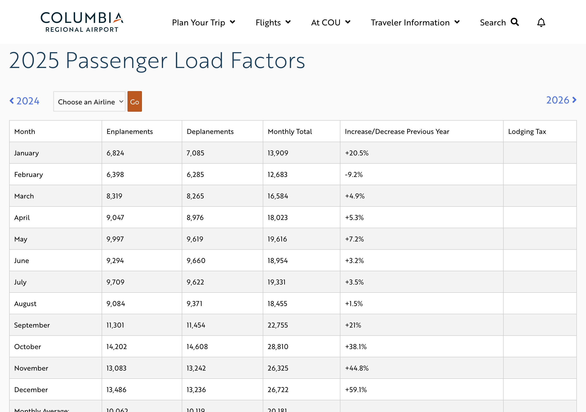
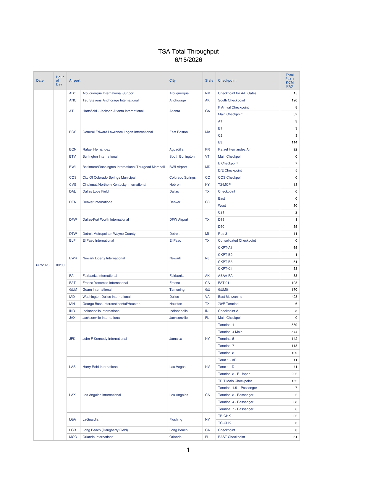

All sessions, slides & sample files:
Open this now. Grab the sample folder and you're ready.
A live demo. Real investigative tasks, no code required.
AI does more than write emails and summarize. Today we put it to work on real reporting chores.
I demo each task once, then you try it with a sample file.
| 1 | Web page → table | Hands-on |
| 2 | Messy PDF → spreadsheet | Hands-on |
| 3 | Compare two documents | Watch-along |
| 4 | Clean messy names/addresses | Hands-on |
| 5 | Build a browse app | Watch-along |
Save the prompts. Every task is a tipsheet you can redo at home.
AI is great at transforming: reshaping, extracting, comparing.
It is risky on facts.
Spot-check everything it pulls against the source before you trust it.
Tip: tell it what the thing is and what you want back (a table, CSV, a diff). Specifics beat politeness.

Each year is its own page: ◄ 2024 … 2026 ►, all the way back to 2002.

Every airport, every checkpoint, every hour. Nobody copy-pastes this by hand.
Source: tsa.gov/foia/readingroom
How I used it: AJC story: Thanksgiving airport security waits
Watch for the buried shift: this bill drifted from mental-health provisions toward physical security & surveillance.
The “don't merge” flag is the point: near-duplicates aren't always the same place.
The skill isn't the first prompt. It's the back-and-forth: ship something tiny, look at it, ask for the next thing.
Cobb County scanned ballot images → structured data on a governor's race and two Supreme Court races. Same pattern as today, at scale:
AI accelerated the coding, not the journalism. The judgment stayed with the reporter.
Always verify facts. AI is your assistant, not your editor.
Shout out a task. Let's try it live.